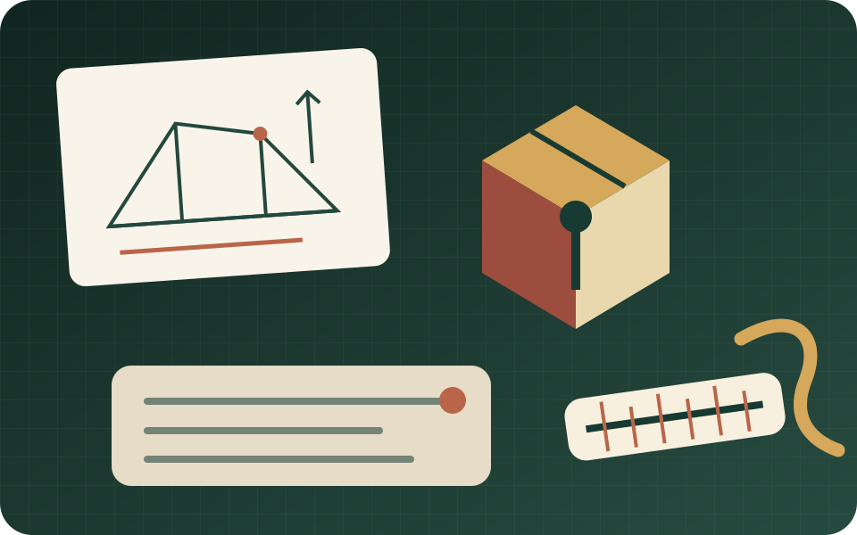
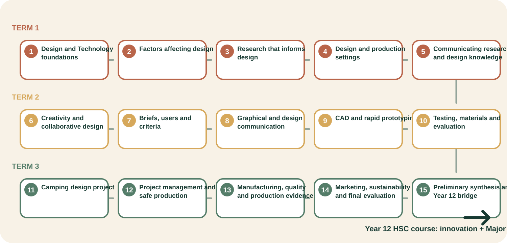

Learn
Read focused theory and connect it to a real design decision.
Industrial Arts Learning Hub · Stage 6 Preliminary
Year 11 Design and Technology
Build the evidence habits that turn a promising idea into a defensible design: research, communicate, prototype, produce and evaluate.

A predictable learning rhythm
Read focused theory and connect it to a real design decision.
Answer ten questions with useful feedback beside each section.
Use evidence in projects, technical communication and written responses.
Save progress locally in a ten-card folio and print or export a backup.
Course pathway
Three terms move from course foundations and research through collaborative digital design, then into the Camping Environment project and HSC preparation.

Projects in context
Research Assignment, Kitchen Companion and Camping Environment resources are connected to the modules where students need them. The supplied task notices and teacher instructions remain the authority.
For teachers
The Year 11 program maps 60 two-hour equivalent blocks. The two-year master maps all 120 blocks and clearly marks Year 12 detail as provisional until the Year 12 site is authored.